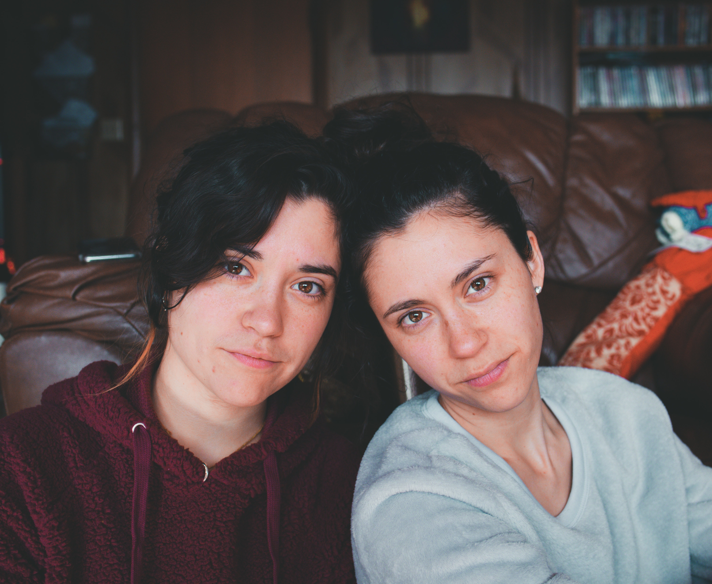

Persona
Who will use our system and why

Harold
Retired elder
- Motivations:
- Harold is a 75 years old now-retired Hungarian electrical engineer. Harold is also the carrier of a disease, similar to bipolar disorder, which causes him to change his temper in an abrupt, incontrollable way.
- His family is very supportive of his condition. However, as any severe medical condition, Harold requires medical follow-up. In an ideal situation, his doctor would be warned every time his temper changed in order to track and analyze his behavior patterns. Since this isn’t possible, Harold got himself a SmartMirror.
- Harold’s account is setup so that every time he stands near, looking at his SmartMirror, the mirror takes a photograph, analyzes the image and determines Harold’s current mood. This information is then sent to his doctor. It also sends a notification every time the system detects a change in his mood.
John
Doctor
- Motivations:
- John is Harold’s doctor. He cares a lot for him and tries to keep up with his current state (mood) at all time.
- In order to be able to remotely know how’s his patient doing, he downloaded an app that notifies him whenever there’s a mood change with Harold. It also allows him to look at statistics regarding the latest readings.

- Motivations:
- Joanne and Madison are two 20 years old twin sisters.
- These twin sisters are not a copy of each other. Joanne is enrolled in an Engineering in an University in the north while her sister Madison is perfecting her dancing skills in an dance academy, down south.
- Although their different interests, they really like and care for each other and make video calls whenever they can. However, Madison is often busy practicing and having her laptop opened on the floor while she’s trying out new moves is, in the very least, risky. Since Madison needs a mirror to practice, Joanne got her a SmartMirror. This way, they can talk while she practices and Joanne can see her new moves firsthand.
Usage Scenarios
How the system will be used
| Feature | Scenario | Scenario Description | Scenario Status |
|---|---|---|---|
| Report Status In order to get better medical care Users should be able to easily report their current status |
Choose to Report | GIVEN a user with a medical condition WHEN the user steps in front of the mirror AND says "Status report" THEN the smart mirror should assess his status (mood) |
To be done |
| Report on Wake (RoW) | GIVEN a user with a medical condition AND said user just woke up WHEN the user steps in front of the mirror AND stands there for a few seconds THEN the smart mirror should assess his status (mood) |
To be done | |
| Remotely Check Patient Status In order to provide better medical care Users should be able to easily check their patient's (latest) reported status |
Notification | GIVEN a user with a medical condition AND a medical professional that cares for said user AND a mobile app that accesses the system's public API AND internet connection WHEN the system records a status (mood) change with the user THEN the medical professional should be notified via the mobile app |
To be done |
| Latest Reports | GIVEN a user with a medical condition AND a medical professional that cares for said user AND a mobile app that accesses the system's public API AND internet connection WHEN the medical professional wishes to check on their patient latest reports THEN the medical professional should be able to access that information using the mobile app |
To be done | |
| Display Informations In order to complement the day to day tasks Users should be able to get useful informations (like the weather) |
Checking the Weather | GIVEN a user AND internet connection WHEN the user says "Display weather" THEN the smart mirror should display the weather for the day |
To be done |
| Checking To Do List | GIVEN a user AND internet connection WHEN the user says "Display To Do list" THEN the smart mirror should display the user's "To do list" |
To be done | |
| Reminders In order to complement the day to day tasks Users should be able to set reminders |
Set Reminder | GIVEN a user AND internet connection WHEN the user says "Set reminder for 10 o'clock" THEN the smart mirror should set a reminder with an associated alarm set to go off at 10 o'clock |
Under Consideration |
| Multimedia Capture In order to complement the day to day tasks Users should be able to take photos and record audio and video |
Taking a Photo | GIVEN a user AND internet connection WHEN the user says "Take a photo" THEN the smart mirror should save the current frame as an image file |
Not to be done (out of scope) |
| Recording Audio/Video | GIVEN a user AND internet connection WHEN the user says "Record audio/video" THEN the smart mirror should record the audio/video stream until the user says "Stop" |
Not to be done (out of scope) |